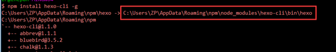
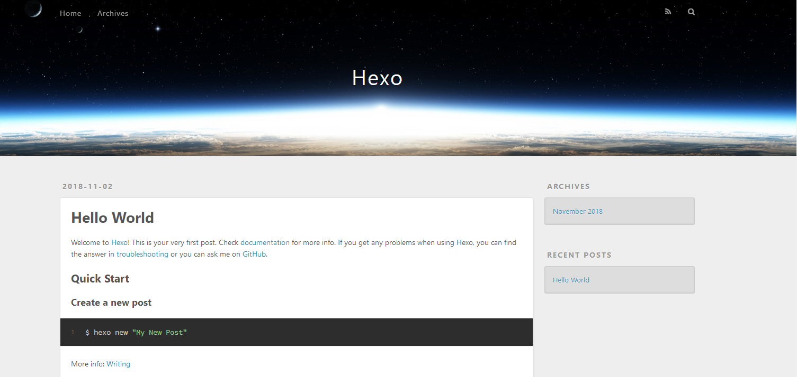
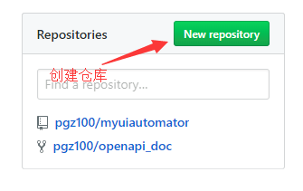
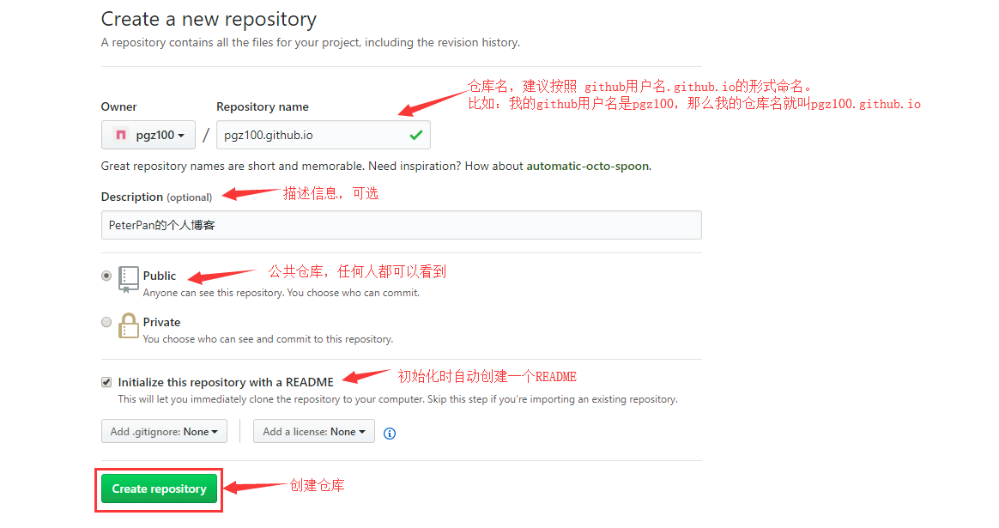
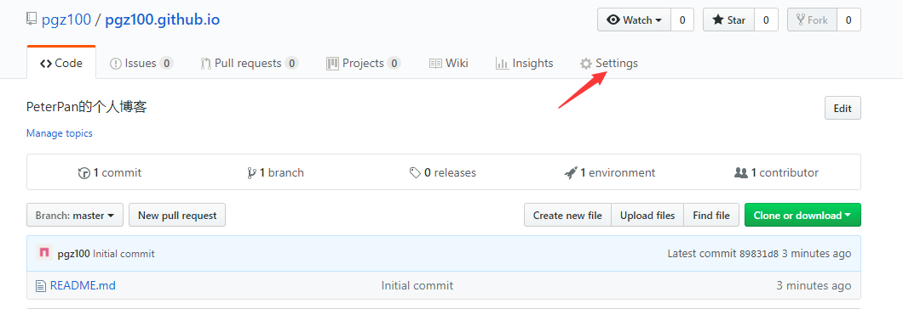
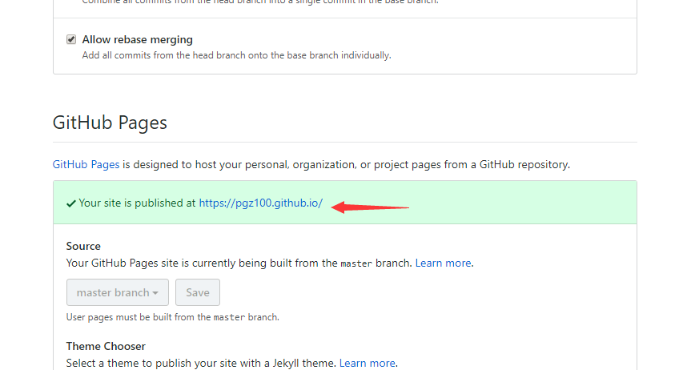
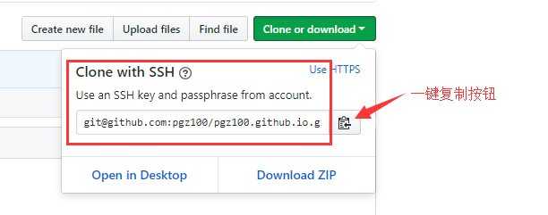

为什么选择Github Page
简单快捷，而且Github Pages可以为你提供一个免费的服务器，免去了自己搭建服务器和读写数据库的麻烦。
为什么选择Hexo，而不是Jekyll
目前有两大静态博客主流框架：jekyll和hexo。我个人选择Hexo的主要原因：
- Jekyll基于Ruby实现，所以安装Jekyll需要搭建Ruby环境，但是在Windows上搭建Ruby环境比较麻烦，而 Hexo基于NodeJs实现，在Windows上安装NodeJs开发环境比较简单。
- Jekyll本地预览的操作比较繁琐，而相比之下，Hexo只需简单几个命令，就可以实现本地预览。
- Jekyll生成静态站点的速度比Hexo的慢很多。
下面就让我们一步步的来搭建属于我们自己的博客吧！
安装Node.js
在 Windows 环境下安装 Node.js 非常简单，仅须到官网下载安装文件并执行即可完成安装。安装时，无脑下一步就行了，不需要配置环境变量。
安装Git
去Git官网根据你的电脑参数，下载对应版本。
下载完成，通过在命令行输入 git version 查看是否安装成功，有输出版本号说明安装成功。
此时鼠标右击后，菜单里就多了Git GUI Here和Git Bash Here两个按钮，前者是图形界面的Git操作，后者是命令行操作，这里我们选择使用Git Bash Here。
Git入门教程： Pro Git（中文版）
安装和体验Hexo
Hexo 是一个快速、简洁且高效的博客框架。Hexo 使用 Markdown（或其他渲染引擎）解析文章，在几秒内，即可利用靓丽的主题生成静态网页。
1. 安装Hexo
在Windows桌面，右键鼠标，点击”Git Bash Here”，打开Git Bash，输入npm命令即可安装。
npm install hexo-cli -g |
在安装过程中，控制台可能会出现一些Warning，可以不用过于在意。
安装完毕后，输入：hexo -v，可能会报错：bash: hexo: command not found。
这是因为没有配置hexo的环境变量导致。
解决方法：在系统变量Path里增加hexo的环境变量，具体路径在刚才安装Hexo的时候已经打印在控制台中了。比如我的路径是这样的：

配置完环境变量后，再输入hexo -v，会发现控制台上打印出一些hexo的版本信息，说明Hexo安装成功了。
2. Hexo初始化配置
创建Hexo博客项目文件夹
根据自己的喜好新建目录（如F:\Blog\Hexo），进入到F:\Blog\Hexo文件夹下，右键鼠标，点击Git Bash Here，进入Git命令框，执行以下操作。
hexo init |
这个命令会从Github上的官方Hexo项目拉取用于项目初始化的代码，其中包含名为package.json的描述性文件。初始化完毕后，可以看到Hexo文件夹下的目录如下：
|- node_modules |
其中_config.yml为Hexo的配置描述文件，source目录用于存放博客内容（ source/_posts目录下默认会生成一个hello-world.md文件），themes目录用于存放主题的样式（默认会生成一个landscaple主题目录）。
本地查看效果
在Git Bash中执行以下命令，然后在浏览器中输入 localhost:4000，即可查看主题效果。
$ hexo generate |
注：这两个命令也可以简写成 hexo g 和 hexo s

将本地Hexo博客部署到Github Pages上
1. 准备工作
- 注册一个Github账号
- 配置好Github环境，包括配置SSH密钥等。
2. 新建Github仓库
- 登录github，点击
New repository创建仓库。

填写仓库属性。
注意：仓库名一般以
user_name.github.io的形式命名。其中user_name是指你的github用户名。如果没有按照这种形式来命名，待会你就会发现创建的博客站点地址比较长，看起来比较奇怪。

查看创建的博客信息。
点击
Settings
进入之后，页面往下滚动，找到标题
GitHub Pages，就会看到你的站点链接。
点击这个链接，会发现只是一个静态页面，页面内容就是README.md文件的内容。
如果仓库名没有按照上面说的格式来命名的话，会发现你的站点链接会相对长一些。其实链接长短并无好坏之分，根据个人喜好而定。
3. 将本地的Hexo博客提交到Github仓库中
安装hexo-deployer-git工具，用于部署博客到Github。
$ npm install hexo-deployer-git --save
打开刚刚创建的github仓库，点击
Clone or download，复制github仓库地址。
打开之前创建的Hexo博客文件夹（如F:\Blog\Hexo），用记事本打开该文件夹下的_config.yml文件，在文件底部找到
deploy字段，并作如下修改：deploy:
type: git
repository: git@github.com:pgz100/pgz100.github.io.git
branch: master其中repository是刚刚复制的github仓库地址，注意将上述repository的值改成自己的仓库地址。
在Hexo目录下右键打开Git Bash Here，输入以下命令，将你的博客部署到你的Github上。
注：hexo g 是 hexo generate的简写， hexo d 是 hexo deploy 的简写。
hexo g
hexo d或直接执行
hexo g -d
如果此时报错：ERROR Deployer not found: git，则说明deployer没有安装成功，需要执行如下命令再安装一次：
$ npm install hexo-deployer-git --save
然后再执行
hexo g -d，你的博客就成功部署到你的Github上了。在浏览器上输入你的博客地址（比如我的博客地址：https://pgz100.github.io/ ），就能看到刚刚部署上去的Hexo的主题效果了。
使用NexT主题美化博客
Next的标语是精于心，简于形，说的很贴切。下面就来看看具体如何使用NexT来美化我们的博客吧。
1. 安装主题
进入我们之前创建的Hexo博客目录下，右键鼠标，打开Git Bash，输入以下命令：
$ git clone https://github.com/theme-next/hexo-theme-next themes/next |
这行命令的意思是从 https://github.com/theme-next/hexo-theme-next 上将NexT主题内容下载到当前目录的themes/next目录下。
2. 启用主题
修改Hexo目录下的_config.yml文件，之前我们介绍过这个文件，是专门用于配置Hexo的，这里我们把它叫做 站点配置文件 。
# Extensions |
3. 设置语言为简体中文
进入Hexo/themes/next/languages目录，这个目录存放的是NexT主题支持的所有语言。实际上，Hexo 在生成的时候会根据 站点配置文件 中设置的language，来查找对应的语言翻译，并提取显示文本。在languages目录下，会发现有个叫zh-CN.yml的文件，这个文件对应的就是简体中文。
具体设置方法：打开 站点配置文件 _config.yml，找到language字段，将其设置为zh-CN。
- 这里需要重点注意下，在NexT官网的使用文档中，写的是将language配置成zh-Hans，是因为之前NexT主题是在 https://github.com/iissnan/hexo-theme-next 里面维护的，这里的简体中文对应的是 languages/zh-Hans.yml文件，后来NexT主题版本升级为6.0，把仓库也搬到了 https://github.com/theme-next/hexo-theme-next ，这里的简体中文对应的是 languages/zh-CN.yml文件。
- 所以，language字段值的设置与所下载的TexT主题版本是相关联的，我们在设置其它语言时也需要注意一下。
右键鼠标，选择Git Bash Here，打开Git Bash，输入以下命令：
hexo clean （最好每次本地预览或更新主题到github前都clean下，防止因为缓存问题，导致更新不及时） |
打开浏览器，输入 localhost:4000 预览主题效果。
如果觉得效果满意，可以执行以下命令，将它部署到你的Github上。
hexo clean |
4. 主题的其它相关配置
在Hexo/themes/next目录下，我们会发现也有一个_config.yml文件，这个文件是由主题作者提供，用于配置主题相关的选项，这里我们把它叫做 主题配置文件 。
其实，NexT官网有个专业的说明文档，里面详细介绍了NexT的使用和配置方法。更多的NexT主题配置，请进入Next官网，查看Next使用文档。另外还有一位大佬写的博客，内容也非常的全面：https://www.cnblogs.com/php-linux/p/8416122.html
再次提醒一下，在配置主题时，要注意区分下我们的NexT主题是从 https://github.com/iissnan/hexo-theme-next 下载的，还是从 https://github.com/theme-next/hexo-theme-next 下载的。截止到2018年11月2号，NexT官网的使用文档是根据iissnan/hexo-theme-next版本来编写的。
在Hexo博客上写文章
1. 用hexo创建文章
我们在写文章时，有些情况下，需要在文章中插入一些图片，此时可以采用本地引用的方法，将图片放在文章自己的目录中。具体方法如下：
打开 站点配置文件 _config.yml，将文件中的配置项
post_asset_folder设为true。post_asset_folder: true
在本地Hexo目录下（如F:\Blog\Hexo），右键鼠标，打开Git Bash，执行命令
hexo new my_article
此时会在source/_posts/目录下生成my_article.md 和 同名文件夹my_article。
将需要使用的图片资源放在my_article目录下，在文章中就可以使用相对路径来引用图片资源了，例如：
图片资源路径：_posts/my_article/image.jpg
文章引用图片资源的写法：
2. 用Markdown写文章
Windows下主流的Markdown编辑器是MarkdownPad2。这里推荐另外一款编辑器：Typora，个人感觉也很好用，目前支持Mac OS X（要求10.10及以上的系统版本）、Windows、Linux系统。
3. 将文章push到Github上
文章写完后，可以先在本地预览效果，也可以直接使用命令 hexo g -d将文章推送到我们的Github仓库中。
遇到的问题和解决方案
1. 本地博客部署到Github后，Github站点没有更新
可能是因为在执行
hexo g -d之前没有先执行hexo clean来清空database以及删除public目录。
2. Hexo部署博客到Github时，没有生成README.md文件
我们知道每个Github项目下一般都有一个README.md文件，但是使用Hexo部署时，是没有README.md文件的。所以我们在这里给Hexo添加一个README，具体方法如下：
- 在Hexo/source目录下，添加一个README.md文件，里面随意写一些内容。
- 修改 站点配置文件 _config.yml，将
skip_render参数值设为README.md这样以后再部署时，会发现Github项目中就有README.md这个文件了。
3. 如何在博客首页设置文章显示 [阅读全文] ？
在首页显示一篇文章的部分内容，并提供一个链接跳转到全文页面是一个常见的需求。在首页显示文章的摘录并显示 阅读全文 按钮，可以通过修改 主题配置文件 _config.yml实现，将auto_excerpt中enable设为true，其中
length:150是指显示在首页的文字长度为150字符，可根据需要自行设定。
enable: true
length: 150